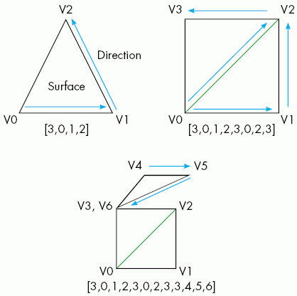
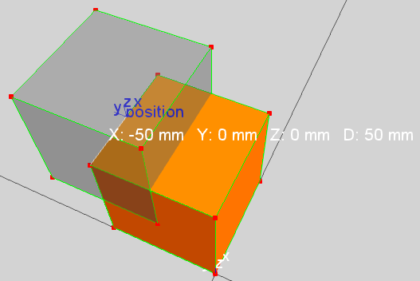
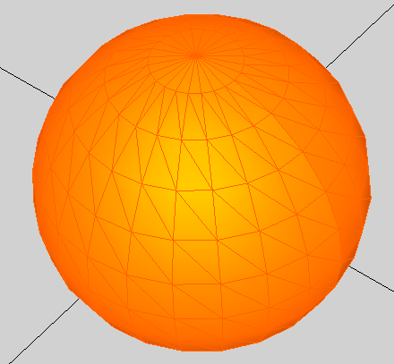

vcTriangleSet is a geometry set used for creating and storing a collection of triangles and tessellated surface data.
Inherits: vcGeometrySet
Contents Hide
| Name | Type | Access | Description |
| CreaseAngle | Real | RW | Defines angle tolerance for triangle edge shading in which edge angles less than tolerance are rendered as smooth surfaces during light calculations. |
| DynamicTextureCoordinates1 | Boolean | RW | Defines if texture coordinates of set can be updated during simulation. |
| DynamicUpdate | Boolean | RW | Defines if geometry of set can be updated during simulation. |
| Name | String | RW | Defines the name of set. |
| PointCount | Integer | R | Gets the total number of points in set. |
| PolygonCount | Integer | R | Gets the total number of triangles in set. |
| PolygonTable | List of Integer | RW | Defines a polygon table in the form of an ordered list used
for generating triangles of set.
In order to generate triangles, the vertex count of polygon is given first followed by the index for each vertex and so on for each subsequent polygon. For example, [3,0,1,2,3,0,2,3] would define two polygons with each having three vertices in which two are shared. Any polygon with four or more vertices will be tessellated. The actual positions of vertices are defined in PositionTable. See Example. Use polygon table to generate triangles for more information. |
| PositionTable | List of Real | RW | Defines a position table in the form of an ordered list used
for generating triangles of set.
In order to generate triangles, position values should have a known index and be in XYZ order. For example, [123.0,45.0,4.5,15.0,45.0,90.0] would define the position of two points which are aligned on Y-axis. If the number of entries is not enough for all points in set, those points will be deleted from set as a clean up operation. If number is more than is needed for points, additional points are created in set. |
| TextureCoordinateTable | List of Real | RW | Gets/Sets texture coordinates for points in set.
f the number of entries is not enough for all points in set, those points will be deleted from set as a clean up operation. If number is more than is needed for points, additional points are created in set. |
| Topology | vcTopology | R | Gets the container of topology data for points in set. |
| TriangleCount | Integer | R | Gets the total number of triangles in set. |
| TriangleTable | List of Integer | RW | Gets/Sets the triangle table of set, which is an ordered list of vertex indices for each triangle. |
| UseTextureCoordinates1 | Boolean | RW | Turns on/off the use of texture coordinates in set. |
| Name | Return Type | Parameters | Description |
| addPoint | Integer | vcVector vector
or Real x, Real y, Real z |
Adds a point to set, and then returns index of point in set. |
| addTriangle | Integer | Integer vertex1, Integer vertex2, Integer vertex3 | Adds a triangle to set, and then returns new triangle count
of set.
See Example. Create sphere with triangle sets for more information. |
| collapsePoint | None | Integer indexPoint1, Integer indexPoint2 | Collapses a point at a given index into another point at a
given index in set, thereby updating triangles referencing first
point to now reference second point.
Generally, this is used to clean up redundant vertices, reduce data count or simplify geometry. |
| convexHull | vcTriangleSet | Boolean value | Creates a convex hull from geometry of set.
If value is True, returns a new triangle set containing the resultant geometry. If value is False, modifies the current geometry of set and returns the same set. |
| decimate | Real | Real quality, Real maxError | Simplifies triangles of set by merging points within a given maxError tolerance until a given quality level is achieved or tolerance is exceeded. |
| decompose | None | None | Regroups triangles in set into different sets based on the connection of each triangle to one another. |
| deleteTriangle | None | Integer index | Deletes a triangle at a given index
in set.
You should call the update() method after deleting one or more triangles from set. |
| getClosestPointAndNormal | 2-tuple (vcVector point, vcVector normal) | vcVector referencePoint | Returns the closest point to a given referencePoint in the set. The object coordinate system of the set is used to find the point, which is returned along with its surface normal. |
| getTexCoord1 | 2-tuple (Real u, Real v) | Integer index | Returns the texture coordinates of a point at a given index in set. |
| getTextureCoordinates | List of 2-tuple (Real u, Real v) | List of Integer indices | Returns a list containing an ordered pair of UV coordinates for points at given indices in set. |
| getPoint | vcVector | Integer index | Returns the position vector of point at a given index in set. |
| getPointIndexesWithin | List of Integer | vcVector position,
Real side_length
or |
Returns a list of indices
for points in set within an area defined by a given position
and side_length.
A normal argument can be given to filter points with the same surface normal. See Example. Get position of points for more information. |
| getPointNormals | List of vcVector | List of Integer indices
or List of Integer indices, vcMatrix convert |
Returns a list of surface
normal vectors for points at a given list of indices
in set.
A convert argument can be used to transform each vector by a given matrix. |
| getPointPositions | List of vcVector | List of Integer indices
or List of Integer indices, vcMatrix convert |
Returns a list of position
vectors for points at a given list of indices
in set.
A convert argument can be used to transform each vector by a given matrix. |
| getTriangle | 3-tuple (Integer vertex1, Integer vertex2, Integer vertex3) | Integer index | Returns the indices of vertices for a triangle at a given index in set. |
getTriangleEdgeNeighbor |
2-tuple (Integer triangle_index, Integer vertex_index) |
Integer index, Integer vertex |
Returns the index of a triangle neighboring another triangle at a given index and vertex in set. The vertex argument should be either 0, 1 or 2. The returned value is an ordered pair identifying neighboring triangle and shared vertex in set. |
getTriangleEdgeType |
Enumeration |
Integer index, Integer vertex |
Returns the type of edge for a triangle at a given index and vertex in set. The vertex argument should be either 0, 1 or 2. The returned type is one of seven possibilities: 0 = UNKOWN 1 = LINE 2 = CO_PLANAR 3 = SOFT 4 = HARD 5 = BOUNDARY 6 = NON_MANIFOLD |
getTriangleNormal |
Integer index |
Returns the surface normal of a triangle at a given index in set. |
|
mergePoints |
None |
Real tolerance or Real tolerance, Boolean onlyBoundaryPoints |
Merges points of triangles within a given tolerance that are not connected to one another by adding lines. A onlyBoundaryPoints argument can be used to only merge points that border one another and that are within the given tolerance. |
setPoint |
None |
Integer index, vcVector vector |
Sets the position vector of a point at a given index in set. |
setTexCoord1 |
None |
Integer index, Real u, Real v |
Sets the texture coordinates of a point at a given index in set. |
| setTextureCoordinates | None | List of Integer indices, List of 2-tuple (Real u, Real v) | Sets the texture coordinates of points at a given list of indices in set. |
setTriangle |
None |
Integer index, Integer vertex1, Integer vertex2, Integer vertex3 |
Sets the vertex indices of a triangle at a given index in set. |
subdivide |
None |
Real max_edge_length or Real max_edge_length, Integer max_triangles |
Modifies triangles in set into smaller triangles with edge lengths smaller or equal to a given max_edge_length. A max_triangles argument can be given to stop subdivision when triangle count reaches a maximum limit. |
update |
None |
None |
Updates the set and its bound box. |
Example. Use a polygon table to generate triangles

| from vcCommand import *
def first_state(): app = getApplication() comp = app.createComponent() feat = comp.RootFeature.createFeature(VC_GEOMETRY,'Geometry') tset = feat.Geometry.createGeometrySet(VC_TRIANGLESET) tset.PositionTable = [0.0,0.0,0.0,100.0,0.0,0.0,100.0,100.0,0.0,0.0,100.0,0.0] #Uncomment any of the three following lines to product the same result #tset.TriangleTable = [0,1,2,0,2,3] #tset.PolygonTable = [3,0,1,2,3,0,2,3] #tset.PolygonTable = [4,0,1,2,3] tset.update() feat.rebuild() comp.rebuild() app.render() #------------------------------------------------------------------------------ addState( first_state ) #------------------------------------------------------------------------------ |
Example. Get position of points within an area filtered by direction

Clear cube and position frame are used to represent the area defined in getPointIndexesWithin() method with position and radius.
| from vcScript import *
import vcVector #create block and collapse to quickly create triangle set comp = getComponent() gf = comp.findFeature('Geometry') if gf == None: gf = comp.RootFeature.createFeature(VC_BLOCK, 'Geometry') gf.collapse() #get triangle set gc = gf.Geometry tset = gc.GeometrySets[0] #use PositionTable to get position of every point in TriangleSet tset_points = tset.PositionTable #use position and radius to get position of points within area position = vcVector.new(50,100,100) point_index = tset.getPointIndexesWithin(position, 50.0) point_positions = tset.getPointPositions(point_index) print point_index #get point normals to filter point_normals = tset.getPointNormals(tset.TriangleTable) for i in range(len(point_normals)): for filter in point_normals: point_index = tset.getPointIndexesWithin(position, 50.0, filter) print point_index |
Example. Create sphere with triangle sets

| from vcScript import *
import vcVector import vcMatrix r = vcVector.new(100.0,0.0,0.0) # Radius of the sphere is 100.0 m = vcMatrix.new() geofeat = getComponent().RootFeature.createFeature(VC_GEOMETRY,'MyGeometry') tset = geofeat.Geometry.createGeometrySet(VC_TRIANGLESET) for i in range(0,361,15): # Step every 15 degrees around Z (first and last coincident) for j in range(90,-91,-15): # Half circle in 12 sections around Y, # starting from south pole m.identity() # always reset the origin before rotate m.rotateRelZ(i) m.rotateRelY(j) p = m * r # transform the radius vector with reoriented origin tset.addPoint(p) for i in range(26): # i is the section around Z (12 in each) for j in range(12): # is around the rotating y axis tset.addTriangle(i*12+j,(i+1)*12+j,(i+1)*12+j+1) tset.addTriangle(i*12+j+1,i*12+j,(i+1)*12+j+1) geofeat.rebuild() getApplication().render() |
Example. Access geometry and polygon data
| from vcScript import *
comp = getComponent() geoFea = comp.findFeature("Geometry") geoCont = geoFea.Geometry for i in geoCont.GeometrySets: print i.PolygonTable print i.PolygonCount print i.PointCount |